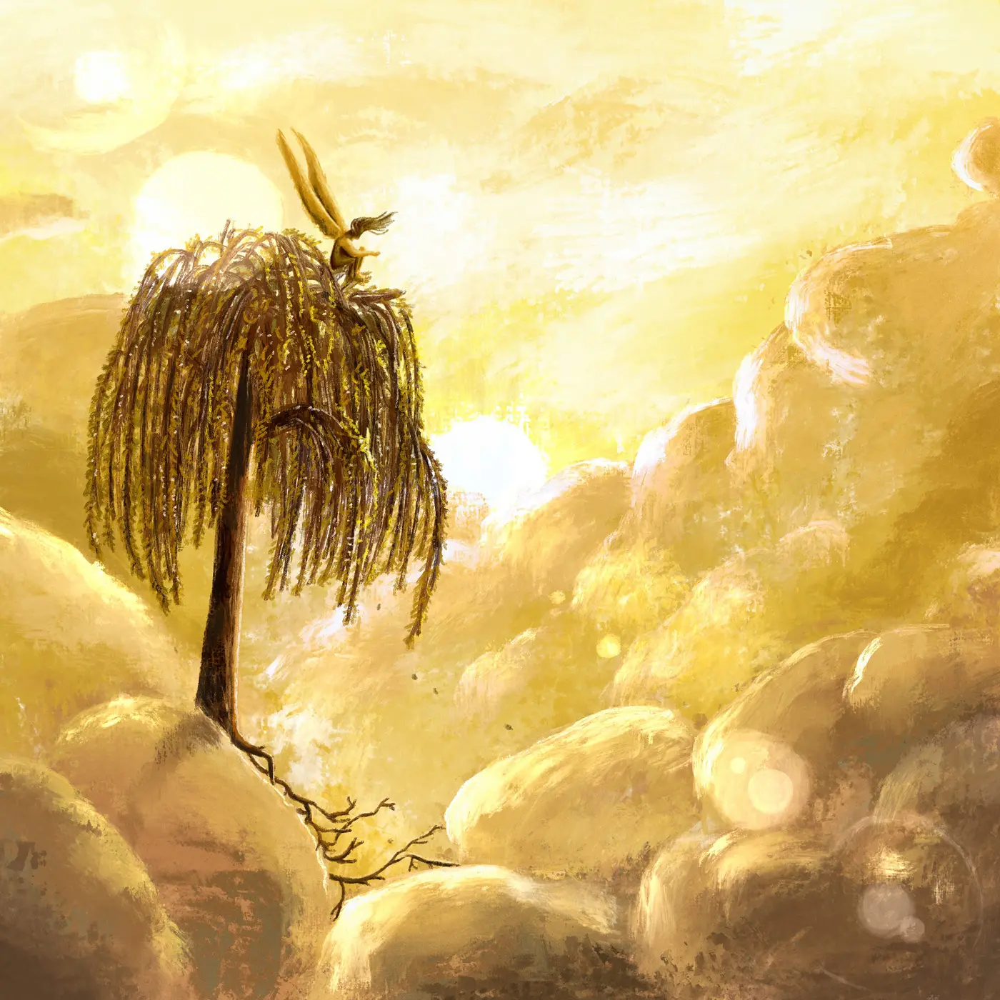

Creacover 2019 : Bilan
Creacover est enfin terminé. Je vais maintenant essayer de faire le point sur ce défi éprouvant en commençant par des généralités, puis j’énoncerai un plan global avant de détailler.
Généralités
Remerciements
Tout d’abord, merci à SylverT et à Diatomée de m’avoir donné l’occasion de participer à ce défi et de me forcer à créer quelque chose chaque jour. Et merci aussi pour vos retours, avis et conseils sur les différentes images. Je pense avoir appris et compris certaines choses sur le choix des couleurs, la perspective, la retouche et la composition d’une image.
Règles du défi
Comme je l’ai déjà dit vers le milieu du défi, 30 jours pour 30 dessins, c’est beaucoup trop intense. Si je devais me replonger dans ce genre d’exercice (ce n’est pas demain la veille), j’opterais plutôt pour une dizaine de dessins basés sur une inspiration (une musique ou autre), à répartir comme il me plaît sur les 30 jours.
Inspirations musicales
Autre point non négligeable à souligner : le choix des musiques. Pour ce défi, nous étions 3 participants et nous nous étions répartis équitablement la tâche afin d’obtenir une liste de titres variés. Choisir 10 musiques a été un véritable calvaire pour moi.
Il fallait que ce soit des nouveautés afin que je puisse faire fonctionner mon imagination, mais également des titres inconnus pour Diatomée (pour les mêmes raisons). Pour SylverT, je ne connais pas sa playlist, il n’y avait qu’à espérer que je lui ferai découvrir des choses.
Finalement, les 10 pistes que j’ai sélectionnées nous ont donné du fil à retordre (et nous ont parfois fait saigner les oreilles). Sur le lot, il n’y en a peut-être que 2 ou 3 que j’apprécie vraiment. J’avais tellement de mal à trouver de bonnes choses que j’en étais réduite à choisir aléatoirement sur Bandcamp ou Youtube. Je ferai un classement de mes musiques préférées et détestées plus loin dans cet article.
Classements
En plus du classement des musiques, j’établierai un top 3 de mes meilleures et de mes pires réalisations.
Je désignerai aussi mon image favorite parmi les réalisations de Diatomée et de SylverT.
Les musiques du défi
Tout au long du défi, nous avons découvert respectivement une musique choisie par SylverT, par moi, puis par Diatomée. Il y a eu de belles découvertes et des horreurs. Et il y a eu beaucoup d’artistes japonais.
En voici la liste dans l’ordre des jours du défi, avec mon ordre de préférence (plus ou moins, car ce n’est pas facile à déterminer) et un avis rapide (quelques mots clés) en rose, entre parenthèses :
- Planet Caravan - Black Sabbath (19 - bonne ambiance maraudeur, hippie.)
- 奏 - Uru (20 - belle interprétation de Uru, peine et tristesse.)
- Apple Star - イノヤマランド (12 - entraînante, répétitive, il y a une petit truc qui me dérange, mais j’aime.)
- Their Memories - Brian Eno & Harold Budd (11 - belle découverte, plongée, monde sous-marin, désespoir.)
- Merry Christmas Mr.Lawrence - Ryuichi Sakamoto (3 - la seule extra de celles que j’ai trouvées, tristesse, mélancolie, espoir.)
- 無限淫楽地獄 - マグダラ呪念 (Magdalene Ju-nen) (6 - metal horreur japonais, surprenante découverte, innovant, kowai.)
- I Won’t Hurt You - The West Coast Pop Art Experimental Band (27 - bizarre, me laisse de marbre.)
- Something Bad (Part 1) - Divine Shade (26 - style industriel étrange, il manque la folie du clip dans la musique.)
- すみれ・チューリップ - Junko Kudo (5 - musique japonaise kawaii, tout en douceur, innocence, candeur, amour.)
- Saku - 横田進 (10 - ambiance qui vous transporte.)
- Futuristic Eyes (Ft. Oceanically) - Mike-Otchers. (25 - expérimental, en chantier.)
- As I am - Laura Allan & Paul Horn (15 - belle voix, belle musique, mais quelque chose cloche pour moi.)
- Fly and Collision of Comas Sola - Tangerine Dream (13 - ambiance agressive et lourde, angoisse.)
- 泣き出しそうだよ feat Aimyon - RADWIMPS (14 - jpop, jrock, tristesse, rupture, symétrie dans la musique, rigueur et sérieux japonais.)
- Emerald Pool - Pauline Anna Strom (7 - belle musique ambiance détente.)
- כשהחשיך הים - Nir Mehlman (21 - belle balade entraînante, indécision sur le ressenti et les émotions.)
- パート・オブ・ユア・ワールド - 劇団四季 (18 - la petite sirène en japonais.)
- Half Sick of Shadows - The Parlour Trick (9 - ambiance creepy intéressante.)
- Juchu - DVA (16 - festivités de la nature, rigolo.)
- Oh Marie - Kevin Sur (22 - grande tristesse, ennui.)
- Blink - 吉村弘 (17 - simplicité et minimalisme qui transportent.)
- Blackwaterside - Bert Jansch (30 - je n’aime pas du tout.)
- The Mystic & the Master - Laura Stevenson (24 - belle voix, mais paroles épouvantables.)
- Apollo - Kriki (2 - bonne ambiance, douce voix, pays froid, histoire, espoir et peine.)
- Anthem For No State, Pt. I,II,III - Godspeed You! Black Emperor (8 - autre post rock extra, intensité et montée en puissance.)
- PAPARAZZI ～＊この物語はフィクションです～ - RADWIMPS (28 - rap japonais, il fallait le découvrir.)
- den gamles stemme brister - Spurv (1 - magnifique musique, émergence de la vie, puissance, omniscience, intensité des ressentis, post rock.)
- Порою Сжатых Хлебов - Рабо́р (4 - super groupe, bonne ambiance mystique et folklorique.)
- All This Useless Energy - Jeff Rosenstock (29 - bof.)
- Ngelam-Lam - Waldjinah (23) - musique traditionnelle, voyage, s’écoute bien.
Top 3
Top 3 de mes préférées
C’est amusant que le dessin que je préfère soit celui qui se rapporte à ma musique préférée du défi. Aux vues des retours de Diatomée et SylverT, j’ai quand-même modifié un peu l’image. La personne qui saute n’était pas assez visible à cause de la mer foncée, en bas à droite, et de l’éclat. Et puis, elle était trop loin (mauvaise composition). En tout cas, c’est le dessin que j’ai pris le plus de plaisir à réaliser.
Top 3 de mes pires
Le dessin du jour 26 ne me plaît pas, car seul le personnage est correct. Le tag est laid et il n’y a pas de décor potable.
Le dessin du jour 23 est vilain pour deux raisons :
- il n’est pas fini, il n’y a aucun travail de lumière ou de texture,
- il représente quelque chose de malsain et de répugnant.
Le dessin du jour 10 se trouve dans ce top parce que je ne l’ai pas réalisé toute seule. J’avais des problèmes de perspective et de motivation. J’ai travaillé sur le croquis et les ombrages de Diatomée.
Image favorite de SylverT et Diatomée
Le dessin de SylverT que je préfère est celui du jour 17, avec les sirènes allongées et bien dynamiques qui remontent vers la surface. J’aime les teintes bleutées et le fait que l’on voit la dillution de la couleur dans les applats foncés, en bas à droite. Les sirènes sont étonnantes. La composition de l’image fait qu’elles semblent se dépêcher de remonter, peut-être parce qu’elles ont hâte de devenir humaine, comme dans la chanson.
Je pense que SylverT va parler du défi et poster ses différents dessins sur son blog.
L’image de Diatomée que j’affectionne le plus est celle du jour 12, avec l’ange qui médite en haut du saule pleureur, au-dessus des nuages. J’aime les teintes de soleil couchant qui font rêver, l’arbre et ses racines, ainsi que la posture de l’ange pensif. Ce dessin me parle vraiment, il m’émeut.
Conclusion
J’ai fait de belles découvertes musicales, ainsi que des progrès en dessin et j’ai appris à utiliser Procreate sur la tablette. Je veux maintenant faire une petite pause dessin et je sais que je n’aime pas du tout me forcer à chercher de nouvelles musiques. Il vaut mieux tomber sur de belles choses par hasard.